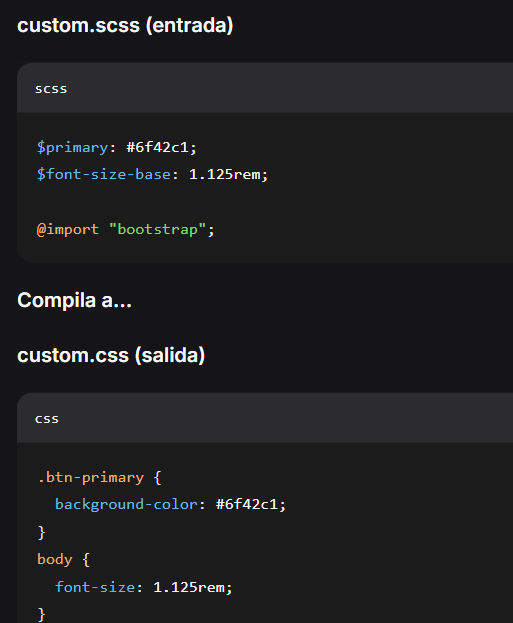

Sass (Syntactically Awesome Stylesheets) es un preprocesador CSS que permite usar variables, anidación, mixins y funciones. Bootstrap 5 está construido con Sass, lo que facilita la personalización de temas, colores, tipografías y espaciados sin tener que modificar archivos fuente directamente. Sobreescribiendo variables de Sass podemos cambiar la apariencia global de Bootstrap de forma limpia y mantenible.
Variables como $primary, $purple se redefinen antes de importar Bootstrap.
Variables: $font-family-sans-serif, $font-size-base, $headings-font-weight
Este párrafo usa lead y tiene un tamaño base de 1.125rem (personalizado). La familia tipográfica es 'Poppins', system-ui, sans-serif.
Texto normal con peso de fuente headings: 600 y énfasis. Los espaciados también se ajustan con variables como $headings-margin-bottom.
Sass permite modificar $spacer y sus multiplicadores ($spacers map).
Modificando $btn-border-radius, $btn-padding-y y colores.
$btn-border-radius: 50rem; | $btn-padding-y: 0.5rem;
Así se sobreescriben variables antes de importar Bootstrap:
npm run build o usando Dart Sass: sass custom.scss custom.css. El CSS resultante integra todos los cambios.
_variables.scss → 900+ opciones.@import "bootstrap".$theme-colors, $grid-breakpoints.
Flujo: variables.scss → custom.scss → bootstrap → estilos finales
Esto no es Sass real, pero muestra cómo cambiar una variable como $primary afecta a componentes. En un entorno real, recompilarías Sass.
*Este es un ejemplo visual. En la práctica, sobreescribes $primary en Sass y recompilas.